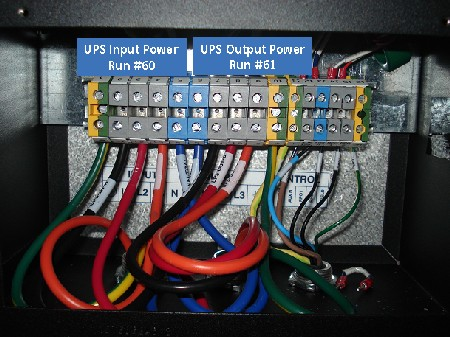

Operating Documentation
Direction 5193574-800, Rev# 22
LightSpeed 7.X Service Methods
Module Version 1.0, Version Date 4/22/10
Operating Documentation |
| Labor: | 1 person; 0.5 man-hour |
| Tools: | Standard Tool Kit |
| NOTE: | This is an overview only. Install the UPS according to the installation instructions included with the option. |
1. Unload the UPS from the shipping pallet and place in its designated location. |  |
2. Connect the UPS internal batteries. | |
3. Connect the UPS input power cable (Run #60, P/N 5125079 from the PDU) to the input terminal on the UPS. | |
4. Connect the UPS output power cable (Run #61, P/N 5125079-2 to the PDU) to the output terminal on the UPS. | |
5. Connect the other end of the power cables to the PDU if not already done. | |
6. Connect the UPS control cable between the A1 Main Disconnect Panel and the UPS control panel. | |
7. Make all other internal UPS connections. | |
8. Configure the A1 Main Disconnect Panel for the UPS. |